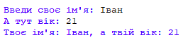

Ну що ж... Ми вже познайомилися з тим, як працюють змінні, але ще не розбирали деяку конструкцію:
name = input('Enter your name: ')
age = int(input('Enter your age: '))
print(f'Your name is {name} and your age is {age}')
Тут ти можеш помітити ще незнайому конструкцію: f'Your name is {name} and your age is {age}'. Це називається форматована строка. Для прикладу у нас є строка "Hello, world!". А що якщо ми хочемо замість "world" вставити ім'я користувача, яке ми отримали до цього? Ми можемо просто вставити у строку якесь значення, у тому числі й ім'я користувача у нашу строку. У прикладі вище ми говорили інтерпретатору, що ми використовуємо форматовану строку і {в таких дужках} говоримо, значення з якої змінної потрібно вставити. У нашому випадку це ім'я та вік.
user_name = input('Привіт. Введи своє ім\'я: ')
user_age = input('А тепер свій вік: ')
print(f"Тебе звуть: {user_name}, а також тобі {user_age} років")

Вище я ще раз додав фрагмент із попереднього уроку. Спробуй написати програму, яка запитає у користувача ім'я та вік і виведе в консоль наступний текст: "Привіт, Іван! Ти народився 2001 року!". Добре подумай, як отримати рік народження знаючи вік